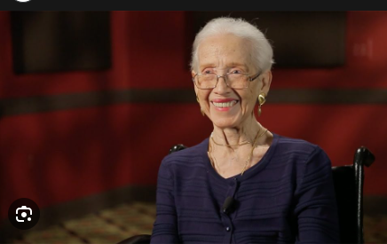
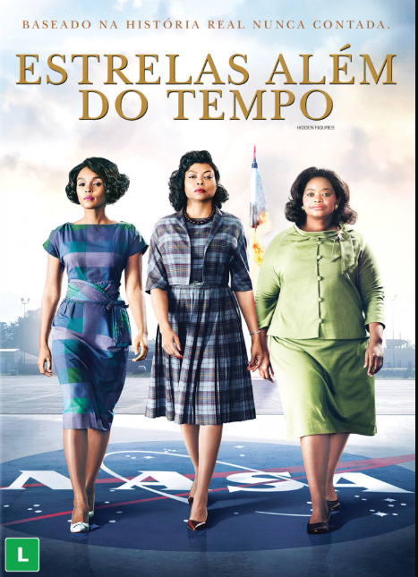

Nasceu em 1918 na Virgínia Ocidental e sempre gostou de aprender e de matemática. Ela era uma ótima aluna e se matriculou na West Virgínia State College quando tinha apenas 15 anos.
Katherine achava que ia ser professora de matemática ou enfermeira, como as outras mulheres que conhecia, até entrar na faculdade e conhecer seu professor, o famoso matemático W. W. Schieffelin Claytor. Ele inspirou Katherine a se tornar pesquisadora em matemática e a ajudou a escolher as
disciplinas de que precisava para atingir esse objetivo.
Aos 18 anos, Katherine se formou na faculdade. Era o auge de Grande Depressão e os empregos eram pouco, então, ela foi lecionar no Ensino Médio. Na década de 1950, a Nasa começou a ter mais
vagas para mulheres afro-americanas que fossem computadores humanos. Katherine se candidatou e conseguiu um emprego!
Katherine queria conhecer todos os detalhes daquilo em que estava trabalhando. Ela não tinha permissão para participar de reuniões, então, perguntou se era contra a lei que uma mulher assistisse a uma reunião. Sua coragem e sua curiosidade deram resultado, e ela foi incluída nas reuniões. O cálculo de planos de voo envolvia equações de geometria complexas, e Katherine era extremamente boa nelas. Ela foi transferida para trabalhar no projeto Mercury, de 1961, e conseguiu calcular a janela de lançamento.
Sua habilidade com matemática era incrível, e ela logo se tornou uma líder no cálculo de trajetórias, sendo uma parte essencial da equipe que calculou a rota para a primeira missão tripulada à Lua, em 1969. Ela fez a maior parte dos cálculos do projeto e também ficou encarregada de verificar as
contas dos novos computadores mecânicos da Nasa. A matemática tinha de ser perfeita para que os tripulantes da Apolo voltassem à Terra em segurança. A missão Apolo foi um sucesso, e as importantes
contribuições de Katherine a tornaram possível!
Mais tarde, ela trabalhou em muitos projetos importantes da Nasa, inclusive no programa dos ônibus espaciais e nos planos para a missão a Marte.
O trabalho dela ajudou os astronautas a visitar as estrelas e voltar à Terra em segurança. Ela se aposentou em 1986, depois de 33 anos de trabalho.
O reconhecimento só veio oficialmente em 2015, quando ela recebeu a Presidential Medal of Freedom – a maior condecoração que um civil pode receber nos EUA – das mãos de Barack Obama. Em maio de 2016, a NASA inaugurou uma central de pesquisa batizada com seu nome. Ela viveu exatamente 102 anos, e pode ver a sua história ser colocada em filme para que muitos possam conhecer.faleceu em 24 de Fevereiro de 2020 na cidade da Virgínia, EUA.
Em 2016 estreou o filme Hidden Figures (Estrelas além do tempo) baseado na história de Katherine e outras duas Matemáticas Dorothy Vaughn e Mary Jackson.